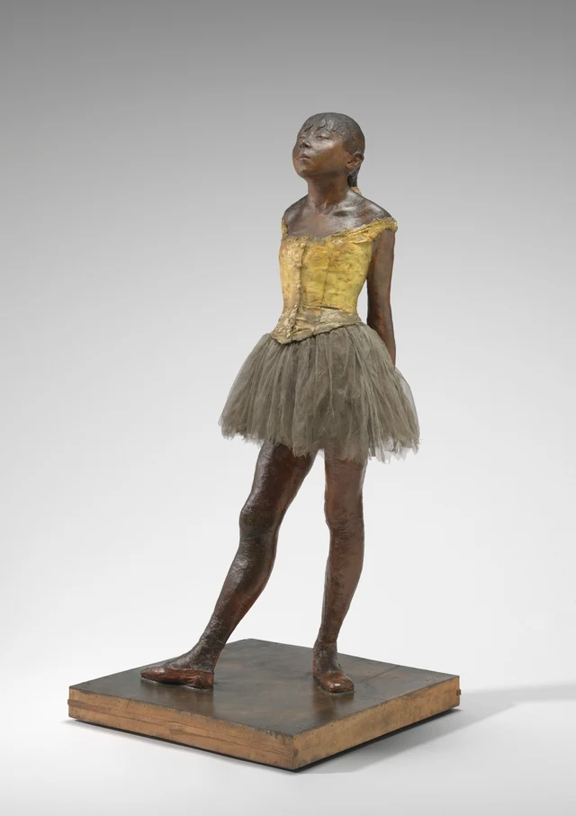
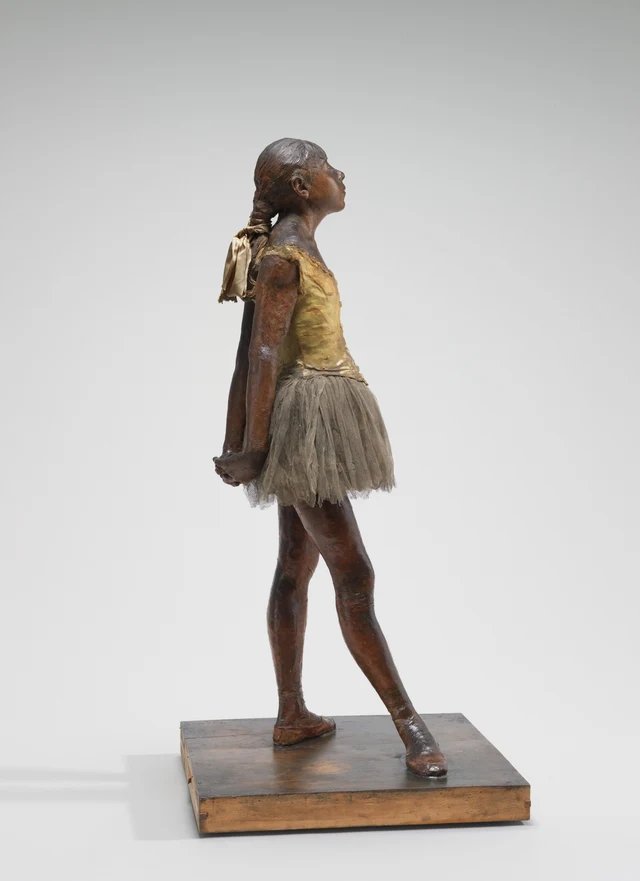
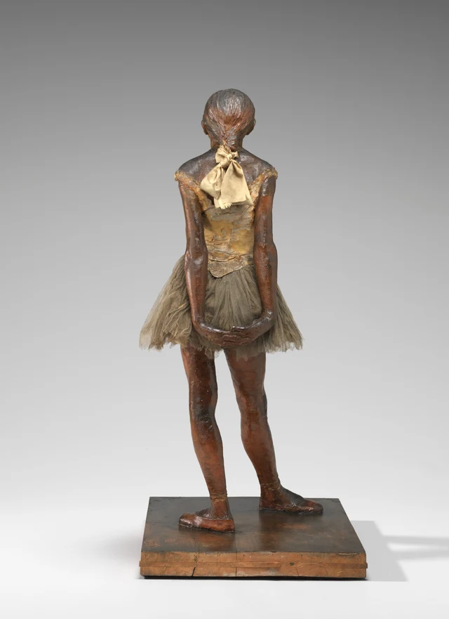
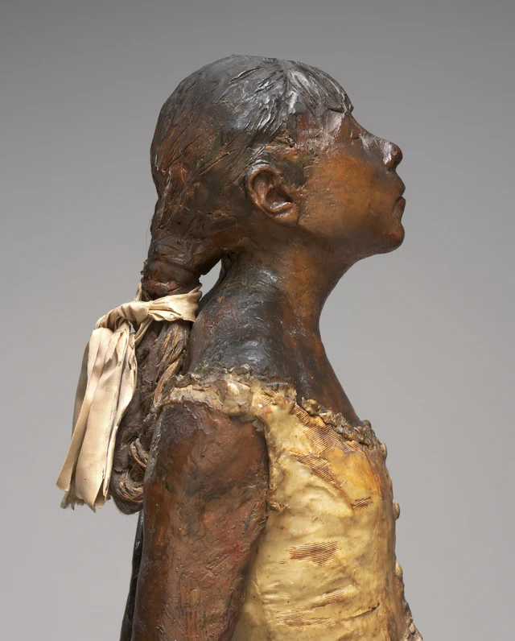
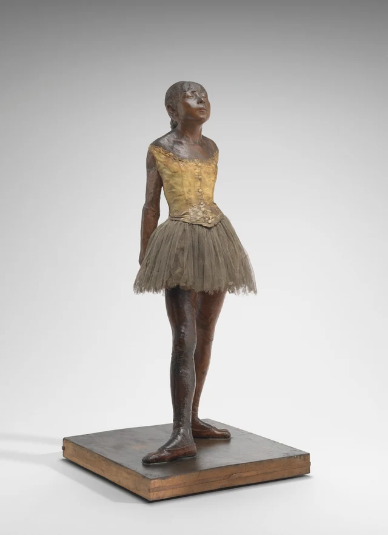

まず、足を見てみよう。
片足は前へ差し出され、もう片方は身体の下に残っている。つま先はどちらも外を向く。両足が乗っているのは四角い木の台だ。跳び上がる前のように、膝を深く曲げてはいない。スカートは周囲に広がっているが、脚はしっかりと地面に着いている。上へ目を移すと、顎を上げ、肩を後ろへ開き、両腕を身体の脇から背後へ引いている。手は隠れ、胸の前にも、観客を迎え入れるような身振りはない。
彼女は踊っていない。それでも、踊りはすでに、その立ち方を形づくっている。

ドガは、ひとときの静止のなかで、踊りが身体にどう残るかを見せている。外へ向けた足、前後に開いた脚、上げた顎、後ろへ伸ばした腕。そのすべてが、この姿勢を保っている。ここでの軽やかさには、地面があり、支えがあり、そこに立ち続けなければならない身体がある。
作品が生まれたのは19世紀後半のパリだった。バレエは都市の舞台文化の一部であり、その舞台裏には長年の稽古と、生計を立てるための重圧があった。1881年、ドガはこの蝋像を第6回印象派展に出品した。生前に公開展示された彼の彫刻は、これ一点だけだ。モデルのマリー・ヴァン・グーテムは労働者階級の家庭に生まれ、パリ・オペラ座で踊りを学んでいた。そうした背景を知ると、目の前の立ち姿が具体的な世界につながる。彼女は踊り手になるために学びながら、一つの職業が求めるもののなかで育っていた。美術館の作品解説
一 両足が軽やかさを地面につなぐ
木の台座を除くと、像の高さは約99センチだ。写真が画面いっぱいに表示されると、等身大のようにも見える。寸法を頭に置いてから木の台と両足を見直すと、見る距離にも具体的な手がかりが生まれる。
図1では、少女の右脚がこちらから見て左下へ斜めに伸び、もう一方の脚はより垂直に近い。二本の脚は、並んだ二本の柱ではない。一方が姿を外へ広げ、もう一方が身体をその場にとどめる。そのためスカートの下の空間も斜めになり、片側は広く、片側は狭い。目は差し出された脚に沿って靴先へ進み、比較的まっすぐな脚をたどって胴へ戻る。その往復のなかで、身体がどこに落ち着いているのかが感じられてくる。
つま先で全身を高く押し上げているわけではない。靴の輪郭をたどると、足が前へ伸び、木の台に接している様子が見える。外へ伸びる動きと、地に着くことの両方が見える。舞台写真の跳躍や回転の瞬間に目が慣れていると、木の台に置かれたこの両足に向き合ったとき、立つことにもずいぶん豊かな形があると気づく。
美術館がプロのダンサー、タラ・ハットンにこの作品について聞いたところ、彼女はやや力を抜いた第4ポジションだと捉え、長い稽古を終えたときのような疲れをその姿勢から読み取った。これは踊り手の経験から生まれる一つの解釈だ。美術館の音声ガイド書き起こし 初めてこの彫刻を見るなら、先に足のポジションの名前を覚える必要はない。足の前後の隔たり、外へ開くつま先の向き、崩れずに保たれた上体。それだけでも、一つの姿勢のなかに休止と訓練がともに残りうることは見えてくる。
右脚は前へ伸びるが、身体全体を前進させてはいない。腕は後ろへ向かい、上体は持ち上がったままだ。それぞれの部分は違う方向を向きながら、少女は立ち続けている。彼女の静止は、これらの方向が互いに引き合うことで成り立っている。
二 横に回ると、手が現れる
正面では、まず顔に目を奪われやすい。上げた顎から誇らしさを感じるかもしれないし、伏せたまぶたから疲れを感じるかもしれない。身体をひととおり見る前に、私たちはもう彼女の気分を選び始めている。
横から見ると、その判断が少しゆっくりになる。

顎は前方斜め上へ突き出され、首の前側が伸び、胸から腹にかけての輪郭は前へふくらむ。その一方で、ほぼまっすぐな両腕が肩から下へ、後ろへと下り、スカートの背後で手が合わさる。前側の曲線と、後ろ側の長い斜線が、同時に姿を現す。
この角度では、「顔を上げる」ということは、頭だけの話ではなくなる。頭の上げ方、肩の後ろへの開き方、腕の伸ばし方が、そろって姿勢全体をつくっている。顔だけを切り取れば、一つの表情が得られる。全身を見て初めて、その表情がどんな立ち方に結びついているかが見える。
さらに背後へ回ると、それまで隠れていた手が、いちばん間近ではっきり見える動作になる。

二本の腕は下へ伸び、手首で曲がり、両手が横向きに合わさる。その輪郭は、下端がすぼまった長い弧のようで、背中とスカートの一部を囲んでいる。頭の後ろから淡いリボンが垂れ、その下に上衣の細くなった腰、さらに下に手がある。質感も幅も違う形が、背中に沿って上下に並ぶ。
これは正面写真に足りなかった「補足」ではない。背面は、作品への注意の向け方を組み替える。読み取る顔がなくなると、私たちは手がどう寄り添っているか、上腕と胴のあいだにどれほど隙間があるか、布が身体と手にどう囲まれているかを見始める。人物の表現力が、顔から身体各部の関係へと移っていく。
三 スカートは、彫り出されたスカートではない
離れて見ると、黄色い上衣、暗い色の身体、灰色のスカートは、一人の人間としてまとまって見えやすい。頭や肩に近づくと、素材の境目が現れてくる。

上衣の表面には、黄色い蝋の起伏もあれば、細かな横筋が露出したところもある。服の縁の細かい凹凸が、肩の大きな起伏につながっている。編んだ髪は、あるところでは暗い色の造形素材の塊のように見え、別のところでは細い毛を見分けられる。そこに結ばれた淡いリボンには、布の折れ角や垂れ下がりが残り、明るい部分は柔らかな面の重なりとなっている。
これらの違いは、すべて彫刻家が模倣してつくったものではない。ドガは本物の人の髪と衣服を使い、その一部を蝋で覆った。上衣は身体に密着し、身につけるものとなると同時に、身体の表面を形づくることにも加わっている。チュールのスカートは外へ広がり、網目や重なった層が、その薄い隙間に光をとどめる。素材の技術的研究
一つの作品のなかで、私たちは二通りの見分け方に出会う。すねを見れば、それが素材で形づくられた身体だとわかる。裾を見れば、目の前にあるのは実際の布だ。目はそれらを一人の少女につなぎ合わせるが、素材の違いは繰り返し意識に上ってくる。彼女は生きた人によく似ている。その「似ている」という感覚のなかに、つくられた跡も表れている。
素材は、作品が空間を占める仕方も変えている。脚と胴は引き締まった量感をつくるが、スカートは輪郭を周囲へ押し広げ、縁はほぐれ、その内側には光を通す小さな隙間がいくつもある。身体のまわりの幅は、その一部が身体そのものではなく、布の広がりから生まれている。密着することと離れること、詰まることと透けることが、ごく近くで入れ替わっている。
現存するスカートには当初の布が残っている可能性があるが、1881年の全体の姿は、今も確定できない。現在見える褐色の蝋の表面や古びた布も、初展示時の色とそのまま同じとはいえない。それでも、目の前の素材どうしの違いは明らかだ。それらがともに働くことで、この作品はここに立っている。技術的研究；初展示時の姿についての研究
四 彼女の見た目を、誰が判断するのか
1881年の観客が、みなこの少女を歓迎したわけではない。蝋、本物の髪、実際の衣服が美術展に持ち込まれ、彫刻作品の素材に対する人々の期待を揺さぶった。踊りを学ぶ少女の身体も、日常生活から遠く離れた理想像へと整えられてはいなかった。作品はガラスケースに入れて展示され、その展示方法から蝋人形や標本を連想する人もいた。初展示の形態とガラスケースの研究；同時代の批評と後世の解釈
なかには、美醜の判断を超えてしまった批評もある。ポール・マンツ（Paul Mantz）は、細い腕や前へ突き出た顔から道徳的な堕落を読み取り、その顔をさまざまな悪徳の予兆とさえ見なした。美術館の研究は、こうした判断を引用するとともに、この作品をドガ自身が「犯罪者的な相貌」という考えを支持した証しと直結させる解釈には留保を示している。批評家が少女に見たものと、画家が私たちに見せようとしたものは、同じとは限らない。NGAの図像解釈研究
ここで、問いの焦点が定まる。この彫刻を美しいと思ってもいいし、形や表面が好きになれなくてもいい。だが、少女の顔を見ただけで、どんな人間かまでわかった気になってはいないか。「この見た目は好きではない」から「この子は悪い人間になる」へ進むとき、美的な判断は人格への裁きに変わっている。今日、彼女を「かわいい」と呼んでも、それだけで彼女を理解したことにはならない。
蝋と実際の衣服は、この問いをいっそう切実にする。彼女には彫刻として形づくられた跡があり、同時に、日常生活のなかで見覚えのあるものを身につけている。大理石像に慣れた目に、本物の髪や布のスカートが入ると、それまで安定していた鑑賞の距離が乱れるかもしれない。親しみを覚える人もいれば、かえって急いで値踏みしようとする人もいる。素材が人物を近くへ連れてくる。近づいたあとに彼女をどう見るかは、見る側自身の問題になる。
パリ・オペラ座の社会的背景を考えると、この見方はさらに重要になる。若い踊り手の訓練、家族の収入、権力を持つ男性観客のあいだには、不平等な関係があった。それらはこの職業を理解する背景であって、一人の少女の経験のすべてに置き換えられるものではない。マリーは名前を持つモデルだ。一つの社会的な結論を導くために用意された、名もない例ではない。19世紀の若い踊り手たち
五 正面に戻っても、背後の手は残っている
もう一度、正面へ戻ってみよう。

図1に比べると、図5では写真のなかの二本の脚が近づき、一部が重なっている。しかし、戻ってきたいま注目したいのは、輪郭が変わったことだけではない。両手はまた身体の後ろに隠れたが、私たちはもう、それがどう合わさっているかを知っている。
その「知っている」が、見ることのなかに残っている。目の前には腕の一部しか見えなくても、それを背後の手へつなげられる。肩が後ろへ開くのを見ると、その先に下へ伸びる二本の長い線があることも思い出す。背面はこの写真に写っていない。それでも、もう空白ではない。
最初に正面を見たときは、顔が何を表しているかだけを尋ねていたかもしれない。戻ってきたいま、顔の前の空間も、胴の厚みも、背後の両手も、一つの身体に属している。以前見えた部分が、いま見えないものを理解することに加わっている。彫刻の厚みも、この見直しのなかで、私たちの見る行為に入ってくる。
ドガが見せるのは、いま進行している踊りではない。踊りがまだ披露されず、しかし身体はすでに踊りによって形づくられている。その場所に私たちの視線をとどめる。立つこと自体が、見るに値するものになる。人が一時動きを止めても、学び、稽古してきた動きは、地面との関わり方に残っている。
もう少し読みたい人へ SAEから見直す
もしこのスカートがチュールではなく、光を通さない一塊の蝋だったら、彼女はこれほど軽やかに見えるだろうか。
まず図2と図3で、スカートの下の縁を探してみよう。中心に近い部分では層がかなり密に重なるが、縁へ来ると、小さな網目やほぐれた糸が見え、その不ぞろいな薄い縁の下から脚が現れる。この違いを覚えて、素材について一つの思考実験をしてみる。スカートの長さと外側の輪郭はそのままに、網目と層のあいだの隙間をすべて埋め、光を通さない蝋の塊にしたと想像する。いまはこの変更だけを思い浮かべ、顔も足の位置も変えず、姿勢も組み直さない。
輪郭は依然として舞踊用のスカートに見えるだろう。だが、脚との関係は変わるはずだ。実際のチュールの縁は光を通し、層は内側へ重なり、その下の脚は、ほぐれた縁の輪から現れる。中まで詰まったスカートに変えると、外側の塊と脚とのあいだに、より硬い量感の境目が生まれる。実際の重量を計算しなくても、上にあるこの塊が両脚にどうのしかかるように見えるか、その感じは変わるかもしれない。
図2と図3に戻り、裾のどこを見てそう判断したのか、確かめてみよう。これは比較のための想像であり、つくり替えた作品を実測した結果ではない。ほぼ同じ外形だけでは、なぜ同じ見え方にならないのかを見分けようとしている。素材よりも一貫して姿勢のほうが重要だと感じるなら、両脚の開きや胴の向きを挙げて説明してもいい。本稿が強調するスカートの視覚的な重みを、そのまま受け入れる必要はない。
この比較は、私たちを両足にも連れ戻す。彼女の立ち姿が見飽きないのは、姿勢が独特だからだけではない。密度の異なる形が、最後には二つの靴と木の台が触れるところに落ち着くからでもある。この彫刻に感じる軽やかさには、素材の条件がある。その条件を見つけても、軽やかさが減るわけではない。むしろ具体的になる。
ここは、SAE（Self-as-an-End）美学へ入る小さな入口にもなる。裾が光を通すこと、層が重なること。そうした指し示せる関係から、一つの美しさがどう成り立つのかを、さらに問い続けられる。SAE美学総論；知覚の美
画像と資料について
本稿は、ナショナル・ギャラリー・オブ・アートが提供する、同じオリジナルの蝋像の写真5点に基づく。いずれも長辺4000ピクセルで、異なる角度からの全身像と、美術館による頭・肩の接写を含む。ファイルは公式にダウンロードした状態を保ち、色調補正、再圧縮、描き足し、画像生成は行っていない。写真の照明、レンズ、切り取り方は見え方に影響するため、現地での観察記録と同一視はできない。
ドガの死後に制作されたブロンズ鋳造作品の写真は使用していない。それらにはそれぞれ制作と所蔵の歴史があり、ここで見る蝋、本物の髪、衣服の表面と混同することはできない。各画像の出典と利用条件は画像一覧、史実と研究の出典は参考資料に記載した。作品の解釈は本稿が提案する読み方であり、美術館の見解や推奨を示すものではない。